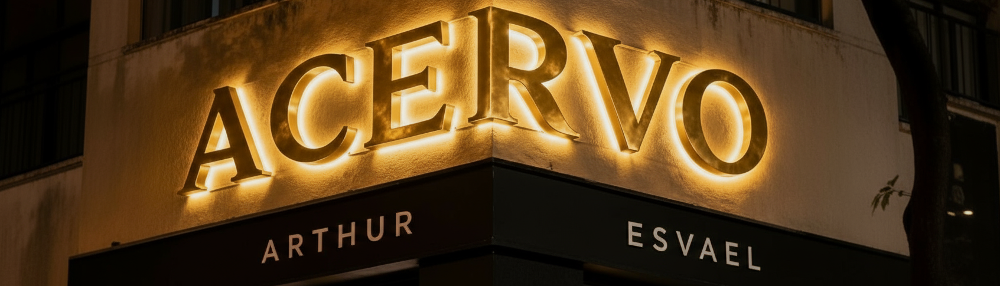

Esvaelistas:
• Victor colt • Hades • Samara • Vicvitorio • Isabelly • Pyetra • Gigi • Ione • Veronica • jm • Gm • Lorenzo • Jv • Julia • Crivelli •
ACERVO
GIFs
Imagens
• DOE PIX PARA ARTHUR ESVAEL: 228.428.428-04 •